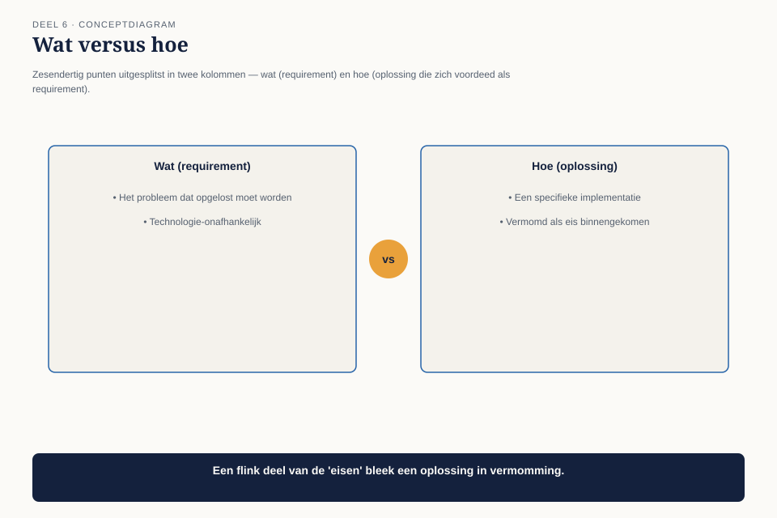

Deel 6 — Design I: requirements en scope
Niveau 1 — De kern | Deelnemersreader BTABoK-cursus, Ductus
6.1 Waar dit deel over gaat
Human Dynamics is gesloten. We betreden nu Design — de pijler met de meeste competenties in de hele BoK, negen in totaal. In dit deel en het volgende behandelen we er vier: requirements modelleren, scope en context, decompositie en hergebruik, en ontwerpmethoden hier; architectuurbeschrijving, views en viewpoints, en traceerbaarheid in deel 7.
Dit deel gaat niet over het maken van een ontwerp. Het gaat over de stap die daarvóór hoort te komen en die stelselmatig wordt overgeslagen: het probleem afbakenen voordat je het oplost.
Aan het eind van dit deel kun je:
- het verschil toepassen tussen een requirement en een oplossing die zich als requirement voordoet;
- een scope- en contextdiagram opstellen dat een systeem afbakent van zijn omgeving;
- een probleem decomponeren in herbruikbare delen zonder voortijdig te optimaliseren;
- een ontwerpmethode kiezen die past bij het type probleem, in plaats van standaard dezelfde te gebruiken.
6.2 De nieuwe opdracht
Claudette krijgt haar eerste zelfstandige ontwerpopdracht: een nieuwe voorziening waarmee deelnemers hun verwachte pensioeninkomen kunnen simuleren onder verschillende scenario’s — eerder stoppen, deeltijdpensioen, een andere pensioenleeftijd.
Ze begint zoals de meeste mensen beginnen: met een lijst van wat het systeem moet doen. Binnen een uur staan er zesendertig punten op, waaronder “moet een grafiek tonen”, “moet exporteerbaar zijn naar PDF”, “moet binnen twee seconden reageren” en “moet gebruikmaken van het bestaande rekenmodel.”

Ze stuurt de lijst naar de projectmanager, die hem terugstuurt met één vraag: “Wat moet dit systeem eigenlijk kunnen dat het huidige portaal niet kan?”
Ze kan die vraag niet in één zin beantwoorden. Dat is het probleem van dit deel.
6.3 Requirement of oplossing
De eerste competentie in deze pijler is requirements modeling, en de eerste vaardigheid daarbinnen is een onderscheid dat klinkt als semantiek en dat in de praktijk het verschil maakt tussen een goed en een slecht ontwerp: een requirement beschrijft wat het systeem moet bereiken. Een oplossing beschrijft hoe.
“Moet een grafiek tonen” is geen requirement — het is een oplossing die zich voordoet als requirement. De onderliggende behoefte is: de deelnemer moet het effect van zijn keuze kunnen begrijpen. Een grafiek is één manier om dat te bereiken. Een tabel, een vergelijking met een referentiepunt, of een simpele zin (“bij deze keuze daalt uw pensioen met 8%”) zijn andere manieren.

De toets: vraag “waarom” tot je bij een behoefte van de gebruiker uitkomt, niet bij een technisch kenmerk.
| Wat er stond | Waarom? | Waarom? | De echte requirement |
|---|---|---|---|
| “Moet een grafiek tonen” | zodat de deelnemer het effect ziet | zodat hij een weloverwogen keuze kan maken | de deelnemer moet de gevolgen van zijn keuze kunnen beoordelen vóór hij haar maakt |
| “Moet binnen twee seconden reageren” | zodat de deelnemer niet afhaakt | zodat de simulatie daadwerkelijk gebruikt wordt | de deelnemer moet de simulatie als direct en betrouwbaar ervaren |
| “Moet exporteerbaar zijn naar PDF” | zodat de deelnemer het kan bewaren of delen | met een adviseur, of voor eigen administratie | de deelnemer moet het resultaat buiten de sessie kunnen raadplegen of delen |
Zodra de echte requirement op tafel ligt, ontstaat er ruimte voor meerdere oplossingen — en die ruimte is precies wat een goed ontwerp nodig heeft. Wie “moet een grafiek tonen” als requirement behandelt, heeft de oplossing al gekozen voordat het probleem is onderzocht.
Dit is dezelfde beweging als de schaptoets uit deel 3 (eis, wens, beperking), maar dan één stap eerder: vóórdat je iets in die drie categorieën indeelt, moet je eerst weten of je naar een echte requirement kijkt of naar een oplossing in vermomming.
6.4 Scope en context
De tweede competentie is grenzen trekken: wat hoort binnen het systeem, wat hoort erbuiten, en waar raakt het de buitenwereld?
Dit klinkt eenvoudig en wordt in de praktijk zelden gedaan, met voorspelbare gevolgen: een project dat langzaam uitdijt omdat niemand ooit heeft vastgelegd wat er níet bij hoorde.

Het scope- en contextdiagram bevat drie lagen:
- Binnen scope — wat het systeem zelf doet. Voor de simulatie: scenario’s doorrekenen, resultaten tonen, resultaten laten bewaren.
- Buiten scope, wel geraakt — systemen en partijen waarmee wordt uitgewisseld, maar die zelf niet worden gebouwd of gewijzigd. Het bestaande rekenmodel, het klantportaal waarin de simulatie wordt ontsloten, de deelnemersadministratie waaruit de basisgegevens komen.
- Expliciet buiten scope — dingen die je bewust uitsluit, met de reden erbij. Geen wat-ifs voor fiscale gevolgen; geen koppeling met externe pensioenpotten bij andere werkgevers; geen persoonlijk financieel advies.
De derde laag is de laag die het vaakst ontbreekt en het meest oplevert. Een scopebeschrijving zonder “expliciet buiten scope” is geen afbakening — het is een wensenlijst met een rand eromheen die iedereen kan verschuiven.
6.5 Decompositie en hergebruik
De derde competentie gaat over het opdelen van een probleem in delen die je apart kunt bouwen, testen en — idealiter — hergebruiken. De valkuil hier is niet dat mensen het overslaan, maar dat ze het verkeerd doen: decomponeren langs technische lijnen in plaats van langs betekenisvolle grenzen.
De vuistregel: decomponeer langs de lijnen waarlangs dingen apart veranderen, niet langs de lijnen waarlangs ze toevallig apart zijn gebouwd.
Bij de simulatievoorziening lijkt een technische opdeling voor de hand te liggen: een rekenmodule, een grafiekmodule, een exportmodule. Dat werkt totdat blijkt dat het rekenmodel — het bestaande, dat al buiten scope is geplaatst in 6.4 — regelmatig wijzigt door wetswijzigingen, terwijl de manier waarop resultaten worden getoond nauwelijks verandert. Een opdeling die de rekenlogica isoleert van de presentatielogica overleeft die wijzigingen zonder de rest te raken; een opdeling die “alles rond één scenario” bundelt, breekt bij elke wetswijziging in zijn geheel.

Voor hergebruik geldt hetzelfde principe in omgekeerde richting: iets is pas herbruikbaar als het een grens heeft die samenvalt met een betekenisvol geheel. Het bestaande rekenmodel is herbruikbaar omdat het één ding doet — rekenen — onafhankelijk van wie het resultaat opvraagt of hoe het wordt getoond. Zodra je presentatielogica in het rekenmodel vermengt “omdat het toch al bestond”, is het niet langer herbruikbaar voor iets anders.
6.6 Ontwerpmethoden kiezen
De vierde competentie is het minst gestandaardiseerd maar in de praktijk het meest bepalend: welke aanpak past bij dit type probleem?
Niet elk probleem vraagt om dezelfde volgorde van werken. Drie herkenbare situaties, met een passende aanpak:
| Situatie | Kenmerk | Passende aanpak |
|---|---|---|
| Het probleem is goed begrepen, de oplossing niet | je weet wat de deelnemer nodig heeft (6.3), maar niet hoe je dat het beste bouwt | verken meerdere ontwerpalternatieven eerst, kies dan — niet andersom |
| De oplossing lijkt voor de hand te liggen, het probleem niet | iedereen wil meteen bouwen, niemand heeft de echte requirement boven tafel (zoals bij Claudette’s eerste lijst) | ga terug naar 6.3 vóór je verdergaat, ongeacht de tijdsdruk |
| Het probleem verandert terwijl je het onderzoekt | wetgeving of organisatie is zelf nog in beweging (relevant bij de stelselovergang) | werk met een kleine, snel te herzien versie in plaats van een compleet ontwerp vooraf |
De fout die het vaakst voorkomt is de tweede situatie behandelen als de eerste: doorbouwen op een oplossing waarvan niemand het onderliggende probleem heeft getoetst, omdat bouwen zich productiever voelt dan vragen stellen. Claudette’s eerste lijst van zesendertig punten was precies dat — een verzameling oplossingen op zoek naar een probleem.
6.7 Terug naar de opdracht
Met 6.3 tot en met 6.6 doorlopen, herschrijft Claudette haar aanpak.
De requirement, in één zin: de deelnemer moet vóór een onomkeerbare pensioenkeuze de gevolgen ervan kunnen beoordelen, op een manier die hij zonder hulp begrijpt.
Scope: scenario’s doorrekenen en resultaten tonen en laten bewaren. Buiten scope, wel geraakt: het bestaande rekenmodel, het klantportaal, de deelnemersadministratie. Expliciet buiten scope: fiscaal advies, koppeling met andere pensioenpotten, persoonlijk financieel advies — met de reden dat dit buiten de vergunning van Meridiaan valt.
Decompositie: rekenlogica en presentatielogica gescheiden, langs de lijn van “wat verandert door wetgeving” versus “wat verandert door gebruikerswensen.”
Ontwerpmethode: situatie twee uit 6.6 — de oplossing (een simulatietool) lag al vast voordat het probleem goed was doorgrond. Ze gaat terug naar de requirement voordat ze verder bouwt, ook al kost dat een week vertraging op een project dat al loopt.
De projectmanager krijgt geen lijst van zesendertig punten meer. Hij krijgt één requirement, een scopediagram, en de vraag of de week vertraging akkoord is.
6.8 Wat dit deel niet afsluit
Er sluit hier geen observatie. De vier competenties in dit deel — requirements, scope, decompositie, ontwerpmethode — zijn het fundament waarop deel 7 voortbouwt. Daar komt de vraag die nog openstaat: als Claudette straks besluit hoe ze dit bouwt, wie legt dan vast waarom ze dat besluit, en niet een ander, heeft genomen?
Dat is observatie O6: van geen enkel belangrijk technisch besluit van de afgelopen drie jaar is vastgelegd waarom het genomen is en welke alternatieven zijn afgewogen. Claudette’s herschreven aanpak in 6.7 is beter dan haar eerste lijst — maar als ze niet vastlegt waarom ze voor deze decompositie en niet voor een andere heeft gekozen, is over twee jaar niemand meer in staat die keuze te begrijpen of te heroverwegen. Dat lossen we in deel 7 op.
6.9 Kernbegrippen
| Begrip | Betekenis in deze cursus |
|---|---|
| Requirement versus oplossing | een requirement beschrijft wat, een oplossing beschrijft hoe; de “waarom”-toets ontrafelt ze |
| Scope- en contextdiagram | drie lagen: binnen scope, buiten scope maar geraakt, expliciet buiten scope met reden |
| Decompositie langs veranderreden | opdelen langs de lijnen waarlangs dingen apart veranderen, niet langs hoe ze toevallig gebouwd zijn |
| Ontwerpmethode kiezen | drie situaties — probleem begrepen/oplossing niet, oplossing voor de hand liggend/probleem niet, probleem in beweging — elk met een eigen aanpak |
Volgende deel: deel 7 — Design II: architectuurbeschrijving en besluitvorming. Claudette heeft nu een goed afgebakend ontwerp. Wie zorgt ervoor dat iemand over twee jaar nog weet waarom ze het zo heeft gedaan? Dat wordt observatie O6.